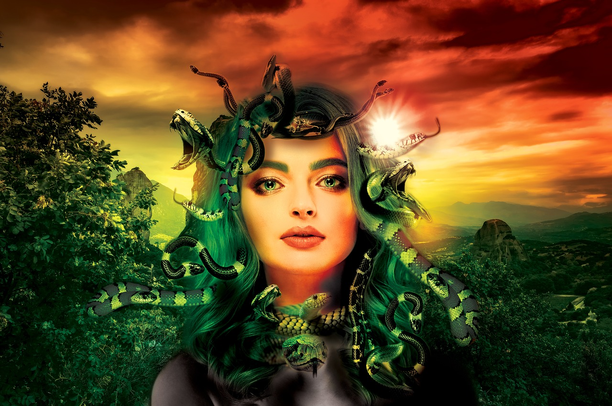

Greziar mitologia antzinako greziarrei dagozkien mito eta elezaharren multzo osoa da, non beren jainko eta heroiez hitz egiten den, zein den munduaren izaera eta jatorria, baita beren kultu eta erritualen esanahia ere. Bere ezaugarriengatik, Antzinako Greziako erlijioaren parte izan zen.

Zehatzak izateko, kontakizun horiek jatorrian hasi eta Greziako penintsula okupatu baino lehenagoko etapa batera iritsi ziren. Horregatik, indoeuropar jatorriko beste mitologia batzuekin nolabaiteko paralelismoa aurki daiteke. Kontakizun multzo honi dagokionez, berez ez dira erlijio bat, baina antzinako greziarrek unibertsoari eta gizakiari buruz zituzten sinesmenek kosmogonia nola eratu zuten erakusten dute.
Greziar mitologia transmititzeko moduari dagokionez, ahozko bidea izan zen forma gogokoena, nahiz eta poeten bitartez kontakizun hauen zati bat ere finkatzea lortu zen, horregatik gaur egun bertsio ezberdinak aurkitzen dira eta horietako gehienak kontserbatu egin dira.
Greziar mitologiako mitorik ezagunenetako bat Heraklesek bere familiaren heriotza berraztertzeko pasa behar izan zituen hamabi frogak dira. Herakles, Herkules erromatar mitologian, Zeusen semea zen, baina ez bere emazte Herarena, Alkmena hilkorrarena baizik. Herakles, kemen eta indar fisiko handikoa, Herak sorgindu zuen, bere jatorri hilkorragatik eta Zeusen desleialtasunagatik. Horren ondorioz, bere familia hil zuen. Egindako krimenengatik barkamena aurkitzeko, Euristeok, haren lekua hartu zuen erregeak, hamabi lan gogor egiteko agindu zion, bete eta gainditu beharrekoak. Horietako batzuk hauek izan ziren: Nemeako lehoia hiltzea, Cerineako oreina harrapatzea edo Kretako zezena heztea.
Erromak, mazedoniar gerren eta Greziaren konkistaren ondoren, greziar garaiko elementu asko egokitu zituen bere mitologiara. Izan ere, erromatar jainko asko greziar mitologiatik hartuak daude.
Tximistaren Jainkoa izateaz gain, Zeus lurrean bizi diren jainko eta hilkor guztien aita ere bada.
Jainko honek uraren amorrua kontrolatzeko ahalmena du, lurrikarak nahierara eragiteaz gain.

Jainko hau Zeus ahalguztidunaren arreba nagusia zen, eta aldi berean haren emaztea. Ezkontza-elkarketak eta jaiotzak zaintzeko erantzukizuna ematen zaio, baita emakume guztiei babes berezia ematekoa ere.